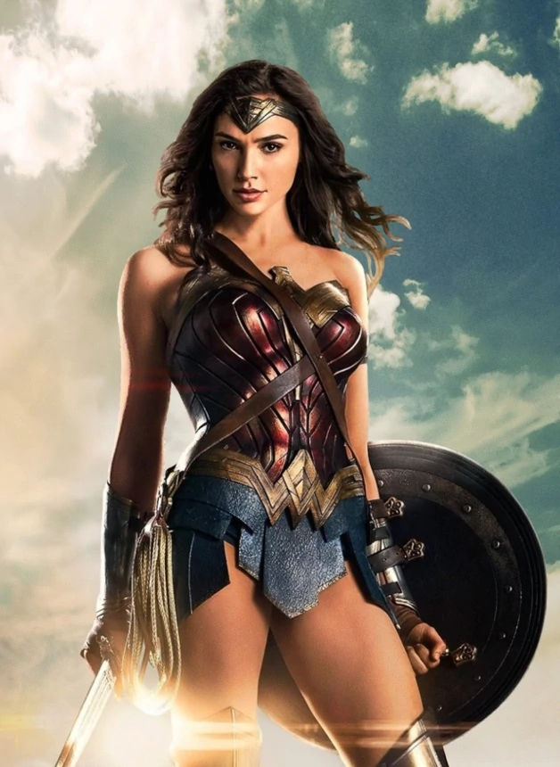
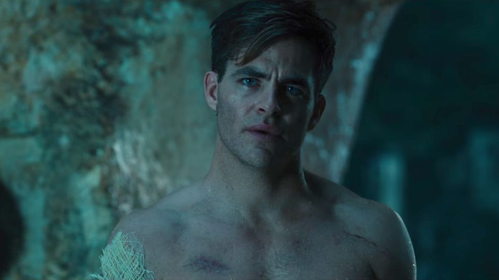

Wonder Woman was Bullshit Feminism and I Am Mad About It.
Published:
Obligatory Spoiler Alert.
8.4 on IMDB? Acclaimed by my favorite liberal news source The New York Times? 97% on rotten tomatoes!? I was all in. In hindsight, I should have known. I should have listened to that little voice in my head during the trailers that said “jeez, she sure is scantily clad for this to be a feminist film.” I should have recognized that sinking feeling I get when I see a Classic Love Interest™ highlighted as a main plot point. I should have listened to my gut when it said “this is too good to be true.”
But the truth is, I was blindsided. After all, the film had just passed the Bechdel test like five times when they make the Chris-Pine-has-a-big-penis joke ten minutes in. I laughed along, unaware of the pain to come. “Ha ha, I, too, would wonder what male genitalia looked like if I grew up in a society of women!” Never mind the fact that on this island paradise, everybody was bare-shouldered and bare-thighed, along with shockingly beautiful. It’s an island paradise! It’s hot out! Besides, it’s an island of all women, and surely a girl’s gotta attract the hotties, men or women. These were my thoughts as I wrote off these harmless signs. But in the final scenes of Themyscira, when Diana and her boo sail away and our naive heroine makes the point that it’s silly for him to not sleep with her, I got an inkling this might not be the “feminist triumph” I was promised.
How was I to know that after the first 10 minutes, there would be only two more female characters, and never again would female characters speak to one another? (Yes, I am leaving out the secretary one-liner commenting on her clothes, and I am leaving out the one line of an enslaved woman crying for help in the battlefield. Those aren’t the Bechdel test). How could I have guessed that Diana would draw her strength, ultimately, from her love for Chris Pine? What would have tipped me off that even our female villain would play mono-dimensional second fiddle to her commander? (Oh riiiiiiight, the skirt…)

Just look at that protective armor!
Diana turns out to be the anti-feminist heroine that Hollywood wants to believe is “progress.” She fights people! She kills people! That’s certainly not very lady-like! So what if she’s doing it in little more than a bathing suit (albeit, one-piece!)? It’s “true to the story.” And that she just happens to be totally naive to the ways of the world (why is this attractive!?). And strangely curious about sex, despite revealing that the Amazons deem men “unnecessary for pleasure.” Maybe she’s bisexual? And that’s progressive? We just only get to think about her having sex with women, and see her having sex with men… progressive, right guys?
When Diana leaves Themyscira, her mother says “the world of men does not deserve you.” Throughout the film, this harken back to Dark Knight (“not the hero we deserve, but the hero we need”) is reiterated multiple times. But when Diana finally realizes her power, it’s drawn only from the loss of her love. Batman was about selfless sacrifice — about being a hero even when you will never be known for it, when you will fall because of it! Batman was the martyr, the complex character who made a non-standard choice of becoming a villain or ruining his own (superhero) life — aka giving up the only thing that brought him purpose in life. Wonder Woman got a boring-ass, played-out, contrived choice: join me and we rule the world together, or save humans and be adored by them. Whatever — that doesn’t make this film anti-feminist, it just makes it boring.
All this, and I still haven’t gotten to the fact that Chris Pine is actually the hero of this movie. Unlike Diana and her one-dimensional harping I-will-kill-Aries-and-save-the-world over and over and over, we get to see his character evolve. He has an intensely internal moral compass, following his gut but also commands. He’s willing to change his mind about who he trusts and works for, he’s evolving even as he’s executing on a plan he knows may ultimately kill him, he protects and trusts his friends, and they trust him with their lives and more. Sure, the romance between Diana and him is strangely rushed and never really developed (maybe its’ small-ish role is a feminist win?) but somebody needs to say “I love you” in the end. Also, low key, he literally leads Diana around the entire film, including my very favorite “I am grabbing your hand and we are running now” (that is not my favorite).
 Hello I am Chris Pine. Love me heterosexually.
In the penultimate scene, Aries basically says “humans are the worst.” Diana responds with “they are… but they’re so much more.” This is a vague-ass line, and it’s all she says on the matter! We can only assume she’s drawing from her love for Piney boy who just sacrificed himself (martyrdom: the ultimate show of character) but it is totally unclear what she means here. She doesn’t even get a speech at the end! Her final words to us are just her opening monologue literally repeated word for word.
The trailers even prepped us for a girl-power extravaganza! To be honest, one sound bite of the tens that Diana pours about saving the world and destroying Aries sounds pretty good amid a gorgeous woman beating up Nazis. I feel misled and betrayed. Kind of like Diana, I guess, maybe? If I identify with the main (female) character, that makes me like this all, right?
Ya know, if you just love superhero movies and can’t see past “STUFF BLEW UP AND IT WAS AWESOME,” that’s cool. I don’t really care that this is a terrible, boring film whose only redeeming quality is fight choreography (even then, it was really just the same cool effects done about fifteen times). What gets me is people are saying this is a feminist WIN! Seriously, fellow humans? You think this is what passes as feminism? News flash: just because the film is named after a female character does NOT make it automatically pro-female-equality. It just pisses me off because it could have been so easy to make it more egalitarian! Change the linguist’s gender and boom: you’ve got another female character. Let Diana and Dr. Whatsherface meet and KA-POW women interacting with women without male supervision! Somehow you managed to put a Native American in rural France during WWI and no one asks questions (actually, no questions, well done), but you couldn’t work a woman into war efforts? Give me a break.
Let’s be clear about one thing: this isn’t feminism, this is a joke. Give me a real female lead with literally any character development and at least one female friend. That is actually all I ask. If you think this film, or my ask, is equality, set higher standards for yourself and for Hollywood.